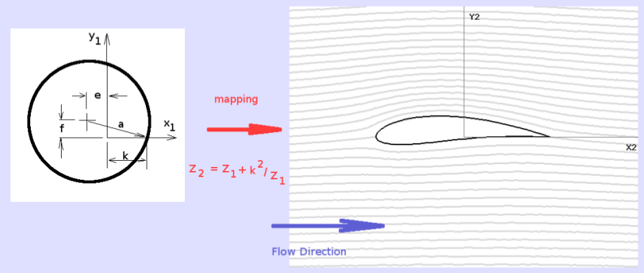
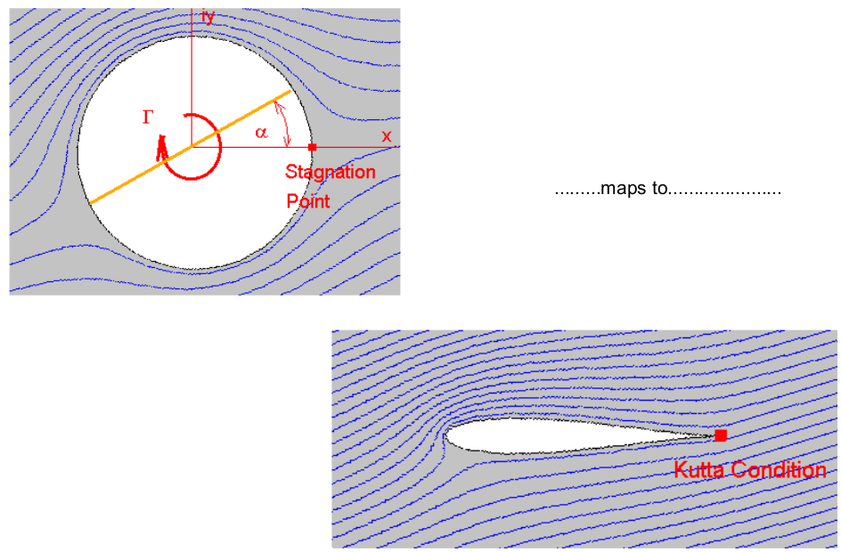
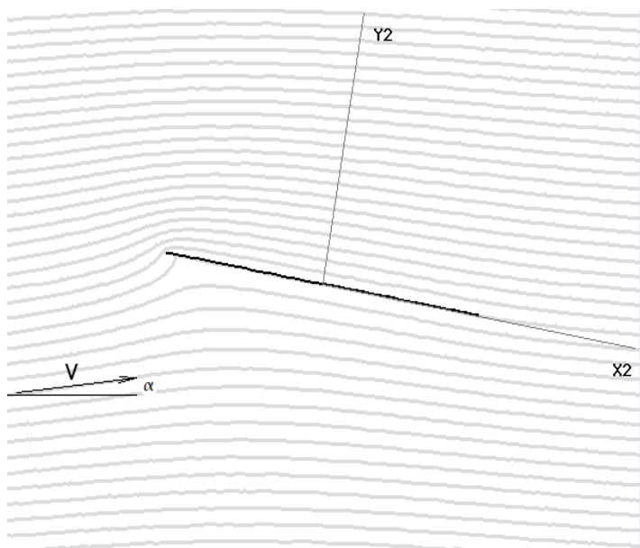

JOUKOWSKI AEROFOILS AND FLOW MAPPING
One of the ways of finding the flow patterns, velocities and pressures about streamlined shapes moving through an inviscid fluid is to apply a conformal mapping to the potential flow solution for a circular cylinder. The cylinder can be mapped to a variety of shapes including aerofoil shapes. By knowing the derivative of the transformation used to perform the geometry mapping, along with the original velocities around the cylinder, the velocities in the mapped flow field can be found.
A simple mapping which produces a family of elliptical shapes and streamlined aerofoils s the Joukowski mapping. The 2-D cylinder ( $ z_1 $ flow field) is mapped to a streamlined shape ( $ z_2 $ flow field) using the mapping.

The mapping is done in complex arithmetic with ( $z_1$ and $z_2$)
representing the complete coordinate space of each flow field,
(
$ z_1 = x_1 + i.y_1 $ ) and ( $ z_2 = x_2 + i.y_2 $ ), and are mapped by,
$$z_2=z_1+k^2/z_1$$
The transformation constant $k$ is used to control the stretching of the flow field. A small $k$ value will produce a near cylindrical shape with large thickness to chord ratio. A large $k$ value approaching the radius of the cylinder $a$ will produce a very thin streamlined shape. A value of $ k=a $ will produce a flat plate. Values of $k$ greater than the radius of the cylinder produce mappings that are NOT conformal and hence do not represent valid flows.
By adjusting the centre of the cylinder relative to the origin of flow field, $z_1$, the mapped object can be made streamlined and curved, thus producing a cambered Joukowski aerofoil section. To guarantee a valid aerofoil shape the transformation constant must be adjusted to match the circle flow geometry.
$$(k+e)^2=a^2-f^2$$
As the far-field is undisturbed by the mapping, the stream velocity $V_∞$ can be determined by the derivative of the transformation function , $dz_2\/dz_1 $ such that,
$$|V_2|={|V_1|}/{({dz_2}/{dz_1})}$$
substituting for the transform function leads to
$$|V_2|={|V_1|}/{1-k^2/z_1^2}$$
where $|V1|$ is the magnitude of the velocity at a point in flow field $z_1$ and $|V2|$ (or $V$) is the magnitude of the velocity at the mapped point in the aerofoil flow field $z_2$.
Pressure coefficients on the surface of the streamlined shape in flow field $z_2$ can then be found by applying Bernoulli's equation for inviscid incompressible flow.
$${Cp}_2-1 - V_2^2/V_∞^2$$
For streamline shapes with sharp trailing edges, such as Joukowski aerofoil sections, circulation must be added to the flow to obtain the correct lifting solution. The value of circulation applied to the cylinder in flow field $z_1$ should be specified so that a stagnation point is produced at the point of intersection of the rear of the cylinder and the x-axis.

This trailing edge $z_1$ point maps to the trailing edge of the aerofoil and when the correct amount of circulation is applied, the Kutta condition will be satisfied at the trailing edge of the aerofoil in flow field $z_2$, (ie. vorticity = 0 at trailing edge.).
This means the required amount of circulation is
$$Γ=4πaV_∞sin(α)$$
where $a$ is the radius of the original circle and $α$ is the stream angle of attack.
Having obtained the correct flow pattern, the lift can be calculated as a function of the amount of circulation applied.
$$\text"Lift"=ρV_∞Γ$$
The flat plate aerofoil.
If the transformation constant is set to be equal to the radius of the circle ( $k = a$ ) and no center shift is used the circle maps to a flat plate aerofoil. By applying the velocity mapping and Bernoulli relationships, the pressure field on the plate can be predicted and hence the lift, drag and moment can be calculated.

Analysis of a Joukowski transformation to a flat plate aerofoil leads to the following standard results.
$$C_L=2πα\text" , "C_{M1\/4c}=0\text" , "C_D=0$$
To see the details of this mapping and the calculation of lift and moment download the document on flat plate lift.
General Joukowski Aerofoil solutions.
While Joukowski aerofoils are relatively simple to create and analyse, they are relatively crude in terms of performance. The geometric properties of this family can be described by the following approximations.
Maximum thickness , $t_{max}≈{3√{3}}/4(e/a)$
and maximum camber height, $h_{max}≈f/{2k}$
The location of maximum thickness is always at the 30% chord location and the location of the maximum camber point is always 50% chord. This arrangement promotes early boundary layer transition and hence moderate drag. The cusped trailing edge is extremely thin and impractical for real construction purposes.
The performance due to camber is modified such that,
$$C_L=2π(α-α_0)=2πα+C_{L0}\text" and "C_{M1\/4c}<0$$
Exact values for these lift and pitching moment constants can be predicted for a specific geometry from the program supplied below. More appropriate aerofoil sections with much improved L/D ratios (measure of efficiency) will be discussed in the following sections.
Software :
The following software application is available to construct and display flow patterns, pressures and list coordinate data for these transformed aerofoil sections.
Joukowski Aerofoil Generator and Flow Analyser.